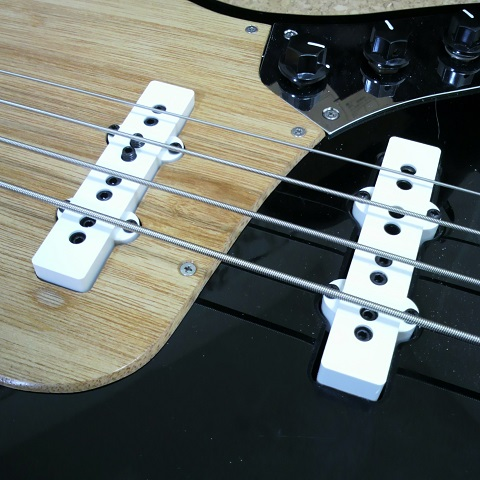

ベースピックアップをDiMarzio Model J DP123に交換
2015年11月06日 カテゴリー：ベース関係

以前ポールピースの高さを調節したDiMarzio Ultra Jazzですが、結局各弦の音量のばらつきに不満が残っていました。そこでポールピースの高さが調整できるDiMarzio Model J DP123に交換しました。ついでにピックアップカバーをSCUDの白のものに変更しています。高さが少し高かったため1mmぐらい削りました。穴の位置はかろうじて大丈夫です。ピックアップの中身は以前のものと同じで1・2弦側と3・4弦側でコイルが分かれていました。
これで音量はきちんと調整できるようになりました。しかしながら、どうしても1弦と2弦の音質は細い感じになりがちです（まぁピッキング位置等でも音は変わりますが…）。そこで1弦と2弦のリアピックアップのポールピースを抜いておき、フロントのみの音が出るようにしました。ただし、この改造は「フロントとリアのフルボリュームミックスしか使わない」というのが前提となります。写真の通り、音量を合わせるため2弦のポールピースがかなりの高さになってしまいましたが、音質としては問題なさそうです。一応詳細を記載しておきます。
＜最終フレットを押さえたときのポールピースと各弦との距離＞
1弦：フロント2mm、リアなし 2弦：フロント1mm、リアなし 3弦：フロント4mm、リア4mm 4弦：フロント5mm、リア5mm
結果としては、2弦は良くなったと思いますが1弦はまだイマイチかなという感じです。まぁ大きい音であればそこまで気にならないし、1弦は使用頻度が低いのでOKとしておきます。